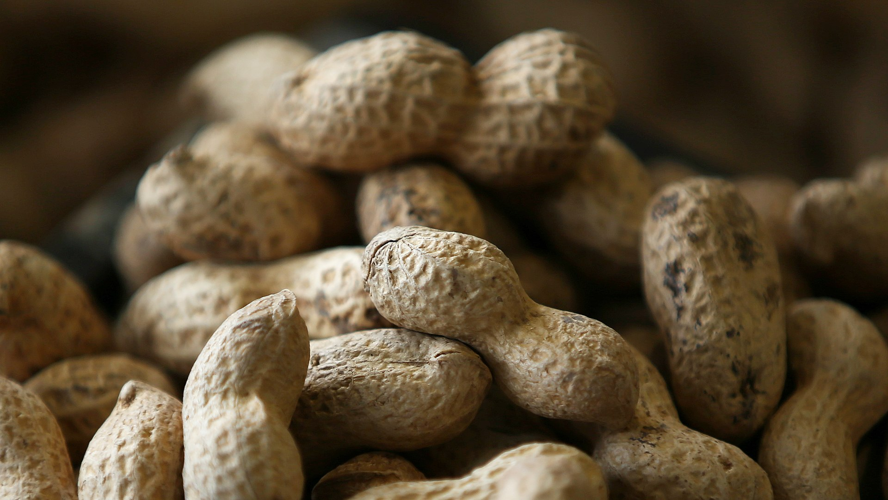

땅콩(PEANUT)
땅콩의 꽃은 노란색을 띠며 나비 모양을 하고 있고, 잎겨드랑이에 핀다. 꽃은 2-3개월에 걸쳐 피는데, 해 뜰 무렵에 꽃봉오리가 벌어지고 수정이 아침 나절에 이루어진다. 며칠이 지나면 자루처럼 생긴 씨방자루가 자란다. 씨방자루는 밑을 향해 자라 깊이가 약 3 cm~5 cm인 흙 속까지 밀고 들어간다. 다 자란 씨방자루는 길이가 18 cm 정도이고, 그 끝에는 발달 중인 열매가 들어 있다. 이 끝이 부풀어 올라 땅콩 꼬투리로 익는다. 꼬투리에는 보통 씨가 2개 들어 있다.

(땅콩 이미지)
(땅콩 이미지)
땅콩의 효능
1. 땅콩은 대표적인 고지방, 고단백, 고칼로리 식품으로 건강식품이다.2. 불포화지방산과 올레인산, 리놀산이 많아 콜레스테롤을 낮추고 동맥경화를 예방해준다.
3. 땅콩의 지방분은 변비예방에 좋다.
4. 땅콩은 비타민 B군이 많이 함유되어 있어 피로회복에 도움을 준다.
5. 땅콩의 지방은 콩의 3배, 비타민 B¹은 12.6배에 이르며, 리신, 레시틴, 비타민 B¹,B²,B³등도 많다. 땅콩은 적혈구를 증식시켜 철분의 흡수를 향상시키고, 기억력을 증신시키며, 호흡기 기능을 강화한다.
6. 땅콩의 붉은 껍질에는 조혈효능이 있다.
7. 땅콩은 비위(소화기)를 강화하고 기관지와 폐 계통을 튼튼히 해주며 가래를 삭히고 인후를 시원하게 도와주는 효능이 있으면서 자양 강장 작용이 있다.